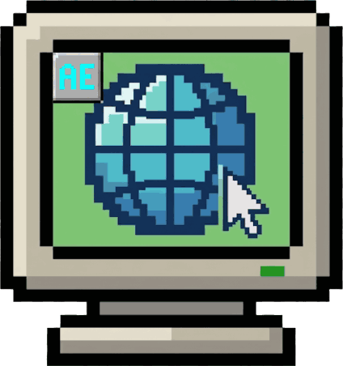

API control
Create, navigate, inspect, click, type, scroll, press, and end through closed request models.

See what your agent sees.
Run one headed Google Chrome Stable session on infrastructure you control. Agents use a bounded JSON API while a human watches or takes over the same local display through noVNC.
Create, navigate, inspect, click, type, scroll, press, and end through closed request models.
Use bounded text and accessibility data before spending a vision step on a PNG snapshot.
Watch the exact headed session through numeric-loopback noVNC, with local human takeover.
No shell, arbitrary JavaScript, raw DevTools, credential import, or wildcard listener.
docker compose up --build
# API health
curl -fsS http://127.0.0.1:8092/browser/health
# live browser view
http://127.0.0.1:6080/vnc.htmlRelease-candidate boundary: Agent Browser is self-hosted software, not a hosted browser service. The v0.1 noVNC surface is unauthenticated and must remain on numeric loopback. Review the security model before changing the deployment shape.